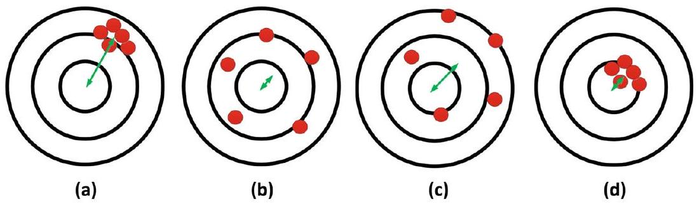
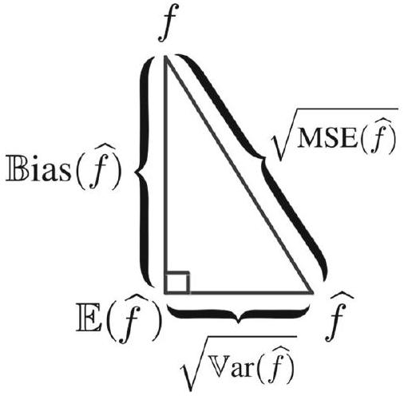
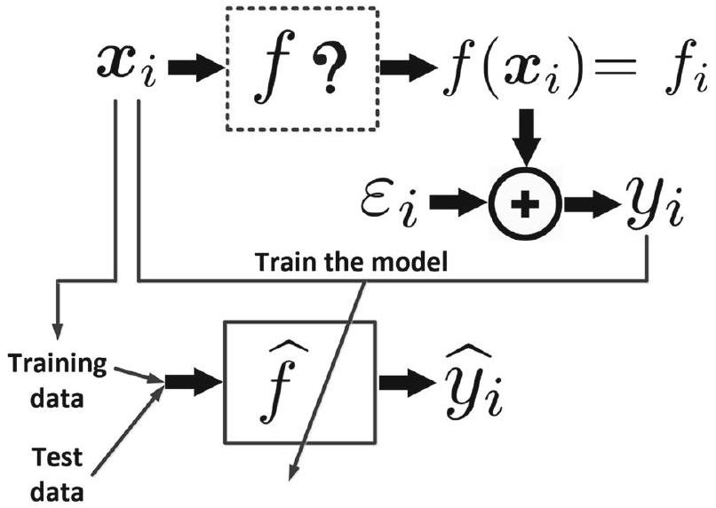
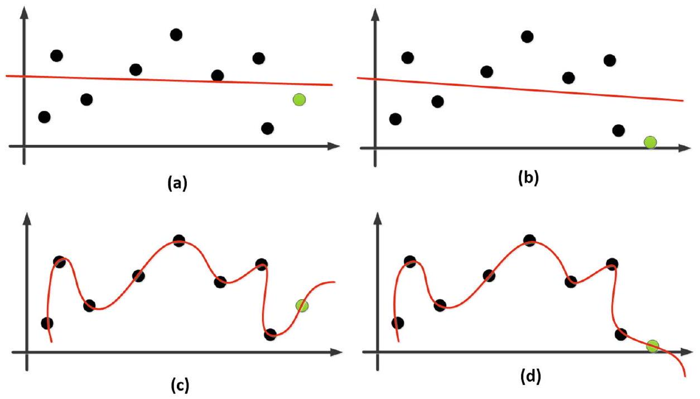
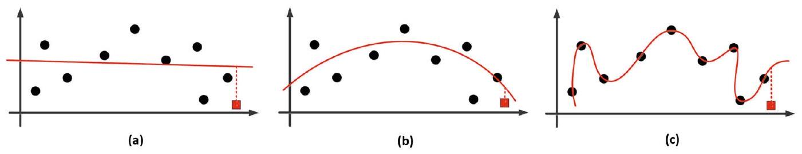
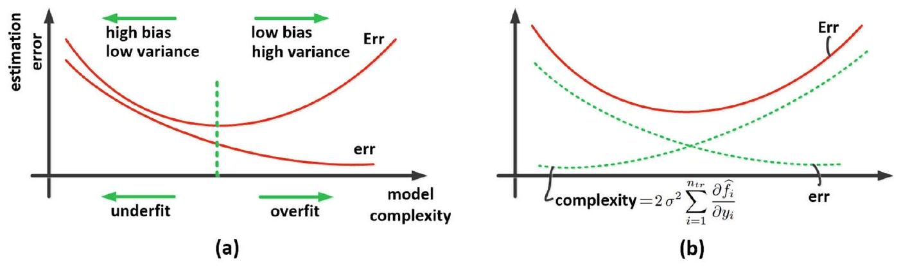
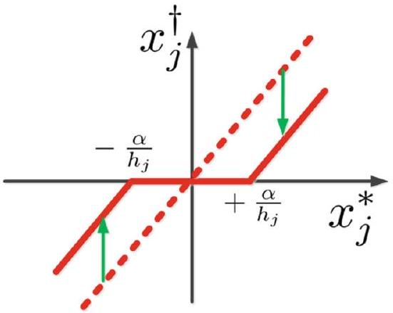
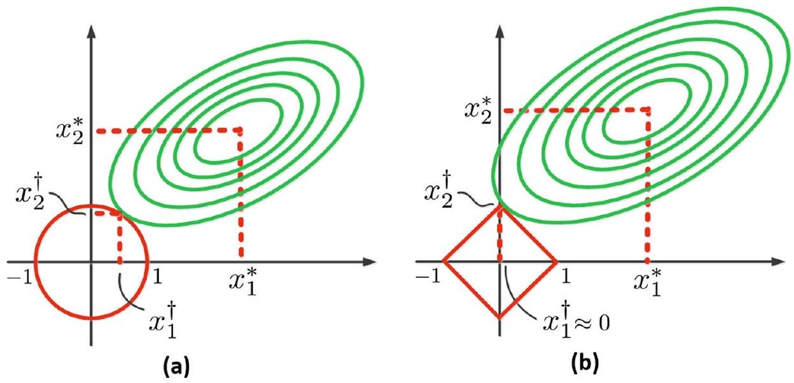

資料切分：訓練、測試、驗證集與兩種 cheating
▼直覺：把資料分成「上課用」與「考試用」
在機器學習裡，我們不能拿同一份資料既當教材又當考卷，否則模型會作弊。最常見的做法是把資料集 $\mathcal{D}$ 切成訓練集 (training set $\mathcal{T}$) 與測試集 (test set $\mathcal{R}$)，兩者互不相交：
$$ \begin{align*} \mathcal{D} &= \mathcal{T} \cup \mathcal{R}, \tag{1} \\ \mathcal{T} \cap \mathcal{R} &= \varnothing . \tag{2} \end{align*} $$
如果還要調超參數，就再切出驗證集 (validation set $\mathcal{V}$)，讓三個集合彼此不相交：
$$ \begin{align*} \mathcal{D} &= \mathcal{T} \cup \mathcal{R} \cup \mathcal{V}, \tag{3} \\ \mathcal{T} \cap \mathcal{R} &= \varnothing, \quad \mathcal{T} \cap \mathcal{V} = \varnothing, \quad \mathcal{V} \cap \mathcal{R} = \varnothing . \tag{4} \end{align*} $$
訓練時只看 $\mathcal{T}$；驗證時用 $\mathcal{V}$ 挑模型或決定何時停止；測試時才用完全沒見過的 $\mathcal{R}$ 來估計真正的泛化能力。
English recap: split before you evaluate
A dataset $\mathcal{D}$ is partitioned into a training set $\mathcal{T}$ and a test set $\mathcal{R}$ (Eqs. 1–2). When hyper-parameters must be tuned, a validation set $\mathcal{V}$ is added so that $\mathcal{T}$, $\mathcal{R}$, and $\mathcal{V}$ are pairwise disjoint (Eqs. 3–4). The test set must remain unseen until final evaluation.
兩種作弊 (Two kinds of cheating)
- Cheating #1：訓練集與測試集重疊，即 $\mathcal{T} \cap \mathcal{R} \neq \varnothing$。模型在訓練時已經看過考題，測試分數會虛高。
- Cheating #2：驗證集與測試集重疊，即 $\mathcal{V} \cap \mathcal{R} \neq \varnothing$。用測試資料來挑超參數，等於把答案洩漏給模型。
此外，雖然 $\mathcal{T} \cap \mathcal{V} \neq \varnothing$ 不算作弊，卻會讓驗證誤差變成訓練誤差的同義詞，導致我們無法偵測過擬合。
重點清單 / Takeaways
- 資料先切分，再訓練與評估；測試集必須全程保持「沒見過」。
- Only the training set is used for learning; the validation set is used for model selection; the test set is reserved for the final report.
- Cheating #1 = train/test overlap; cheating #2 = validation/test overlap. 兩者都會讓泛化估計失真。
- 分類的標籤來自有限集合；回歸的標籤是連續實數。
🤖 AI 生圖可用：重繪此示意圖的提示詞（結構化）
WHAT（骨架）: 左上半部是「整筆資料 D」被切成 Train（藍）、Val（橘）、Test（綠）三個互不相交的區塊，Test 下方標示「只能在這裡使用」。下半部紅底區塊對比三種交集：Cheating #1 是 Train 與 Test 重疊、Cheating #2 是 Val 與 Test 重疊，第三種 Train 與 Val 重疊雖不算作弊但標為危險。 WHY（因果或反直覺）: 模型若先看過考題（Test）就無法評估真實泛化；若用 Test 挑超參數（Val∩Test）等於把答案洩漏出去。反直覺：Train 與 Val 重疊雖不違法，卻會讓驗證誤差變成訓練誤差的同義詞，掩蓋過擬合。 MUST show（必備要素）: ① 三個集合顏色分明且邊界不重；② Test 單獨標註「最終評估」；③ Cheating #1/#2 用重疊區塊+紅色警示；④ Train∩Val 用黃色警告；⑤ 上方正確流程與下方錯誤流程的對比。 AVOID（禁止）: 不要把三個集合畫成同心圓或重疊的正常流程圖；不要只用文字條列而無幾何重疊；不要讓 Test 同時流向訓練與評估。 STYLE: flat vector, viewBox 720×360, white background, purple title (#5b21b6), blue/orange/green blocks, red warning zone, Chinese + English labels, rounded corners, clean arrows.
根據式 (1)–(2)，訓練集 $\mathcal{T}$ 與測試集 $\mathcal{R}$ 的關係是？
若要調整超參數，通常需要額外切出哪一個集合？
$\mathcal{V} \cap \mathcal{R} \neq \varnothing$ 被稱為？
為什麼 $\mathcal{T} \cap \mathcal{V} \neq \varnothing$ 也應該避免？
MSE、Variance、Bias：誤差拆解與飛鏢圖
▼直覺：猜靶時的「準度」與「穩定度」
假設我們用隨機變數 $\widehat{X}$ 去估計真實值 $X$。每次估計就像射一支飛鏢：
- 變異數 (variance) 衡量飛鏢落點有多分散；
- 偏差 (bias) 衡量落點平均離靶心多遠；
- 均方誤差 (MSE) 則是同時懲罰這兩者。
定義如下：
$$ \operatorname{Var}(\widehat{X}) := \mathbb{E}\left((\widehat{X}-\mathbb{E}(\widehat{X}))^{2}\right), \tag{5} $$
$$ \operatorname{Bias}(\widehat{X}) := \mathbb{E}(\widehat{X}) - X, \tag{7} $$
$$ \operatorname{MSE}(\widehat{X}) := \mathbb{E}\left((\widehat{X}-X)^{2}\right). \tag{8} $$
Variance 也可以寫成 $\mathbb{E}(\widehat{X}^{2}) - (\mathbb{E}(\widehat{X}))^{2}$（式 (6)）。
English recap: bias vs variance
Variance measures how much the estimate fluctuates around its own mean; bias measures how far the expected estimate is from the true value; MSE combines both through the decomposition below.

誤差拆解：MSE = Variance + Bias²
把 $(\widehat{X}-X)$ 拆成 $(\widehat{X}-\mathbb{E}(\widehat{X})) + (\mathbb{E}(\widehat{X})-X)$，展開後交叉項會消失，得到經典拆解：
$$ \operatorname{MSE}(\widehat{X}) = \operatorname{Var}(\widehat{X}) + \left(\operatorname{Bias}(\widehat{X})\right)^{2}. \tag{9} $$
這告訴我們：要讓 MSE 小，不能只壓低其中一項，必須同時控制「穩定度」與「準度」。

重點清單 / Takeaways
- Variance 大 = 模型對資料波動太敏感；bias 大 = 模型長期系統性偏離真相。
- Low variance means the estimator is stable; low bias means it is accurate on average.
- MSE 把兩者結合成單一指標，是選擇與比較模型時最常用的損失之一。
- 理想目標是找到 variance 與 bias 都小的「甜蜜點」。
🤖 AI 生圖可用：重繪此示意圖的提示詞（結構化）
WHAT（骨架）: 左側是一個大直角三角形，垂直股標 Variance、水平股標 Bias、斜邊（紅虛線）標 MSE，三角形內寫「MSE = Var + Bias²」。右側是四個小型飛鏢靶：高 Var（分散在靶心周圍）、高 Bias（集中在靶外一側）、兩者都高（分散在靶外）、理想（集中在靶心），理想靶用綠色外框強調。 WHY（因果或反直覺）: MSE 不是單一維度，而是「穩定度」與「準度」的畢氏和。反直覺：一個估計可以同時看起來「平均不錯」卻很不穩定，或很穩定卻系統性偏離；兩者都小才是真實的「好」。 MUST show（必備要素）: ① 直角三角形三邊對應 Var / Bias / MSE；② 斜邊最長，視覺化「MSE 是兩者的合成」；③ 四個小靶分別對應四種組合；④ 理想靶以綠色高亮；⑤ 不要把 Bias 與 Variance 畫成互斥選項，而要畫成互相垂直的兩軸。 AVOID（禁止）: 不要只畫一個靶子加文字；不要畫成只有 Bias 或只有 Var 的單維圖；不要把 MSE 畫成與兩者無關的第三條線；不要使用 LaTeX 反斜線。 STYLE: flat vector, viewBox 720×360, white background, purple triangle fill (#ede9fe), red hypotenuse, blue/green/orange dart dots, Chinese + English labels, no shadows.
式 (5) 的 $\operatorname{Var}(\widehat{X})$ 衡量什麼？
根據式 (9)，MSE 等於？
低 bias 且高 variance 對應哪種模型行為？
Fig. 1 中，最理想的情況是？
共變異數與線性組合的變異數
▼直覺：兩個隨機變數會不會一起變動？
Variance 描述單一變數的波動。當我們把多個變數加起來時，還需要知道它們「一起變大或一起變小」的傾向，這就是共變異數 (covariance)：
$$ \operatorname{Cov}(\widehat{X}, \widehat{Y}) := \mathbb{E}(\widehat{X}\widehat{Y}) - \mathbb{E}(\widehat{X})\mathbb{E}(\widehat{Y}). \tag{11} $$
Covariance 為正表示兩者傾向同向變動；為負表示反向變動；為零則表示沒有線性相關。
English recap: covariance captures co-movement
Covariance measures how two random variables move together. Positive covariance means they tend to be on the same side of their means; negative covariance means opposite sides; zero covariance means no linear relationship.
線性組合的變異數
對於兩個隨機變數的線性組合，變異數不是各自變異數的簡單相加，還要加上 covariance 項：
$$ \operatorname{Var}(a\widehat{X} + b\widehat{Y}) = a^{2}\operatorname{Var}(\widehat{X}) + b^{2}\operatorname{Var}(\widehat{Y}) + 2ab\operatorname{Cov}(\widehat{X}, \widehat{Y}). \tag{10} $$
如果 $\widehat{X}$ 與 $\widehat{Y}$ 獨立，則 covariance 為零，但反過來不一定成立：covariance 為零不代表獨立。
推廣到多個變數：
$$ \operatorname{Var}\left(\sum_{i=1}^{k} a_{i} X_{i}\right) = \sum_{i=1}^{k} a_{i}^{2}\operatorname{Var}(X_{i}) + \sum_{i=1}^{k}\sum_{j\neq i} a_{i}a_{j}\operatorname{Cov}(X_{i}, X_{j}), \tag{13} $$
$$ \operatorname{Cov}\left(\sum_{i=1}^{k_{1}} a_{i} X_{i}, \sum_{j=1}^{k_{2}} b_{j} Y_{j}\right) = \sum_{i=1}^{k_{1}}\sum_{j=1}^{k_{2}} a_{i}b_{j}\operatorname{Cov}(X_{i}, Y_{j}). \tag{14} $$
重點清單 / Takeaways
- Covariance 量化兩個隨機變數的線性共變趨勢。
- Independent random variables have zero covariance, but zero covariance does not imply independence.
- 線性組合的變異數包含 variance 項與 covariance 項，忽略後者會低估整體風險。
- 推廣公式 (13)–(14) 是 bagging、投資組合理論等許多應用的基礎。
🤖 AI 生圖可用：重繪此示意圖的提示詞（結構化）
WHAT（骨架）: 三個並排的散點圖，分別代表 Cov > 0、Cov = 0、Cov < 0。每張圖都有 X-Y 軸與 4 個資料點：正 cov 的點沿右上升趨勢排列，並用紅箭頭表示「波動被放大」；零 cov 的點雜亂分佈在虛線橢圓內；負 cov 的點沿右下降趨勢排列，並用綠箭頭表示「波動被抵銷」。底部灰底長條寫出 Var(aX+bY) 的展開公式，強調第三項 Cov。 WHY（因果或反直覺）: 線性組合的風險不只是個別變異數相加，兩個變數「一起動」的方向會讓總波動放大或縮小。反直覺：獨立可推出 Cov=0，但 Cov=0 並不保證獨立。 MUST show（必備要素）: ① 三種 Cov 符號並排對比；② 正 Cov 的紅箭頭向上傾斜、負 Cov 的綠箭頭向下傾斜；③ 零 Cov 用虛線橢圓表示無線性趨勢；④ 底部公式含 2ab Cov 項；⑤ 標示「忽略 Cov 會高估或低估風險」。 AVOID（禁止）: 不要只畫一張圖；不要用相關係數 ρ 代替 Cov 的文字說明；不要讓三張圖的軸刻度不一致；不要使用 LaTeX 反斜線。 STYLE: flat vector, viewBox 720×360, white background, red/blue/green for three cases, grey formula bar at bottom, Chinese + English labels, clean scatter dots.
式 (11) 定義了什麼？
若 $\widehat{X}$ 與 $\widehat{Y}$ 獨立，則 $\operatorname{Cov}(\widehat{X},\widehat{Y})$ 為？
式 (10) 中，線性組合的變異數除了兩個 variance 項外，還包含？
根據式 (13)，當所有 $X_i$ 兩兩獨立時，$\operatorname{Var}(\sum a_i X_i)$ 會簡化成什麼？
真實模型：$y = f + \varepsilon$ 與高斯雜訊
▼直覺：我們永遠看不到真正的答案
實務上我們想學一個「真實模型 (true model)」$f$，它把輸入 $\boldsymbol{x}$ 映射到真實輸出 $f(\boldsymbol{x})$。問題是：我們看不到 $f(\boldsymbol{x})$，只能看到被雜訊污染過的觀測值 $y$：
$$ y_{i} = f_{i} + \varepsilon_{i}, \tag{15} $$
其中雜訊 $\varepsilon_{i} \sim \mathcal{N}(0, \sigma^{2})$，也就是平均為 0、變異數為 $\sigma^{2}$ 的高斯雜訊。
English recap: observations are noisy targets
The true model $f$ generates unobservable true outputs $f_i$. What we actually observe is $y_i = f_i + \varepsilon_i$, where the noise $\varepsilon_i$ is assumed to be Gaussian with mean zero and variance $\sigma^2$.

雜訊的性質
由於 $\varepsilon_i$ 的期望值為 0，觀測值的期望等於真實值：
$$ \mathbb{E}(y_i) = \mathbb{E}(f_i) + \mathbb{E}(\varepsilon_i) = f_i. \tag{17} $$
同時，雜訊的二階矩滿足：
$$ \mathbb{E}(\varepsilon_i^{2}) = \operatorname{Var}(\varepsilon_i) + (\mathbb{E}(\varepsilon_i))^{2} = \sigma^{2}. \tag{16} $$
這表示無論模型多強，我們都無法把誤差壓到比 $\sigma^{2}$ 還低——這是資料本身的雜訊下限。
重點清單 / Takeaways
- 真實輸出 $f_i$ 不可觀測，我們只看到 $y_i = f_i + \varepsilon_i$。
- Gaussian noise with mean zero implies $\mathbb{E}(y_i)=f_i$.
- 雜訊變異數 $\sigma^{2}$ 決定了任何模型能達到的誤差下限。
- 學習的目標是用估計模型 $\widehat{f}$ 逼近真實模型 $f$，而不是去擬合雜訊。
🤖 AI 生圖可用：重繪此示意圖的提示詞（結構化）
WHAT（骨架）: 左側是紫色框「True Model f」，標示「我們看不到」。一條虛線箭頭穿過藍色雲狀「Noise ε ~ N(0, σ²)」，產生右側綠色框「Observed y = f + ε」。右下方橘色框是「Estimated f̂」，從 y 學來，並以箭頭指向它。左下方紅底區塊畫一條紅線，標示「即使 f̂ = f，MSE 仍至少為 σ²」。 WHY（因果或反直覺）: 我們從未直接觀測真實模型，只能透過被雜訊污染過的資料去猜。反直覺：學習的目標不是把訓練誤差降到零，而是逼近 f；資料本身的雜訊設定了無法突破的下限。 MUST show（必備要素）: ① True Model 用虛線或「看不到」標示；② Noise 用雲狀/點點表示 Gaussian；③ 觀測值 = f + ε 的加法結構；④ Estimated f̂ 來自 y 而非 f；⑤ 紅底區塊強調 σ² 是不可約誤差下限。 AVOID（禁止）: 不要畫成 f 直接連到 f̂ 而沒有 y；不要把 noise 畫成可消除的誤差；不要讓 f 與 f̂ 看起來完全相等而忽略雜訊。 STYLE: flat vector, viewBox 720×360, white background, purple/blue/green/orange blocks, noise cloud with dots, dashed arrow for hidden true output, red warning bar at bottom, Chinese + English labels.
式 (15) 中，$y_i$ 與 $f_i$ 的關係是？
假設 $\varepsilon_i \sim \mathcal{N}(0,\sigma^{2})$，則 $\mathbb{E}(\varepsilon_i^{2})$ 等於？
為什麼我們無法把預測誤差壓到任意小？
式 (17) 告訴我們什麼？
Case I：測試實例的經驗誤差與真實誤差
▼直覺：沒用來訓練的資料，誤差比較「誠實」
考慮一個不在訓練集中的實例 $(\boldsymbol{x}_0, y_0)$。因為它沒有參與訓練，模型的預測 $\widehat{f}_0$ 與觀測 $y_0$ 獨立。把 $y_0 = f_0 + \varepsilon_0$ 代入 MSE 可得：
$$ \mathbb{E}\left((\widehat{f}_0 - y_0)^{2}\right) = \mathbb{E}\left((\widehat{f}_0 - f_0)^{2}\right) + \sigma^{2}. \tag{21} $$
交叉項消失，因為 $y_0 \perp \widehat{f}_0$ 且 $\mathbb{E}(y_0 - f_0) = 0$。
English recap: test error decomposes cleanly
For an instance not used during training, the expected squared error equals the squared error against the true output plus the irreducible noise variance $\sigma^2$. The cross term vanishes because the prediction and the noisy observation are independent.
經驗誤差 vs 真實誤差
對 $n_{te}$ 個測試實例做 Monte Carlo 近似，可以得到：
$$ \sum_{i=1}^{n_{te}} (\widehat{f}_i - y_i)^{2} = \sum_{i=1}^{n_{te}} (\widehat{f}_i - f_i)^{2} + n_{te}\sigma^{2}. \tag{22} $$
左邊是可以在電腦上算出的經驗誤差 (empirical error)，記作 $\mathbf{err}$；右邊第一項是相對於真實輸出的真實誤差 (true error)，記作 $\mathbf{Err}$。因此：
$$ \mathbf{err} = \mathbf{Err} + n_{te}\sigma^{2} \quad \Longrightarrow \quad \mathbf{Err} = \mathbf{err} - n_{te}\sigma^{2}. \tag{23} $$
因為 $n_{te}\sigma^{2}$ 是常數，最小化 $\mathbf{err}$ 就等於最小化 $\mathbf{Err}$。這就是為什麼測試誤差是可靠的泛化指標。
重點清單 / Takeaways
- 對未參與訓練的實例，MSE 可拆成「對真實值的誤差 + 雜訊變異數」。
- Empirical error $\mathbf{err}$ is observable; true error $\mathbf{Err}$ is what we really want to minimize.
- 兩者只差一個常數 $n_{te}\sigma^{2}$，所以最小化經驗誤差就能最小化真實誤差。
- 這也說明：測試集必須與訓練集互斥，否則獨立性假設不成立。
🤖 AI 生圖可用：重繪此示意圖的提示詞（結構化）
WHAT（骨架）: 上半部：左邊紫色框「Model f̂（用 Train 訓練）」，右邊綠色框「Test point (x₀, y₀)」，中間藍色虛線箭頭標「獨立」。下半部：一條灰色長條被分成兩段，左段藍色標「True Error Err」，右段紅色標「Noise floor n_te σ²」，整條長條對應「empirical err」。底部刻度標 0 與 empirical err。 WHY（因果或反直覺）: 因為測試點沒參與訓練，預測與觀測獨立，所以 MSE 可乾淨拆成「對真實值的誤差 + 雜訊地板」。反直覺：最小化我們能看到的 empirical error，同時就在最小化看不到的 true error，因為兩者只差一個常數。 MUST show（必備要素）: ① f̂ 與 Test point 之間的「獨立」箭頭；② 長條的兩段式分解；③ True Error 與 Noise floor 的標籤；④ 兩段相加等於 empirical err；⑤ 用顏色區分可估計部分與不可約部分。 AVOID（禁止）: 不要讓 f̂ 與 Test point 之間沒有分隔或連接過強；不要把 Noise floor 畫成可消除的區塊；不要遺漏「獨立」這個關鍵因果條件。 STYLE: flat vector, viewBox 720×360, white background, purple/green blocks, blue dashed independence arrow, blue/red segmented error bar, Chinese + English labels.
式 (21) 中，測試實例的 MSE 等於？
為什麼式 (21) 的最後一項交叉會消失？
式 (23) 中，$\mathbf{Err}$ 與 $\mathbf{err}$ 的關係是？
為什麼最小化測試經驗誤差 $\mathbf{err}$ 等同最小化真實誤差 $\mathbf{Err}$？
Stein's Lemma 與 Stein 無偏風險估計 (SURE)
▼直覺：用「敏感度」來修正訓練誤差
當實例有參與訓練時，$\widehat{f}_0$ 與 $y_0$ 不再獨立。直接算 $\mathbf{err}$ 會低估真實誤差，因為模型已經「看過」這筆資料。Stein's Lemma 提供了一個修正項。
設 $\boldsymbol{z} \sim \mathcal{N}(\boldsymbol{\mu}, \sigma^{2}\boldsymbol{I})$，且 $\boldsymbol{g}(\boldsymbol{z})$ 是某個可微函數，則：
$$ \mathbb{E}\left((\boldsymbol{z}-\boldsymbol{\mu})^{\top}\boldsymbol{g}(\boldsymbol{z})\right) = \sigma^{2}\sum_{i=1}^{d}\mathbb{E}\left(\frac{\partial g_i}{\partial z_i}\right). \tag{24} $$
English recap: Stein's Lemma links covariance to divergence
Stein's Lemma states that the expected inner product of a Gaussian perturbation and a differentiable function equals $\sigma^2$ times the expected trace of the Jacobian. It is the foundation of Stein's Unbiased Risk Estimate (SURE).
單變數形式與 SURE
把式 (24) 寫成單變數形式：
$$ \mathbb{E}\left((z-\mu)g(z)\right) = \sigma^{2}\mathbb{E}\left(\frac{\partial g(z)}{\partial z}\right). \tag{25} $$
令 $z=\varepsilon_0$，$\mu=0$，$g(z)=\widehat{f}_0-f_0$，則訓練實例的 MSE 變成：
$$ \mathbb{E}\left((\widehat{f}_0 - y_0)^{2}\right) = \mathbb{E}\left((\widehat{f}_0 - f_0)^{2}\right) + \sigma^{2} - 2\sigma^{2}\mathbb{E}\left(\frac{\partial \widehat{f}_0}{\partial y_0}\right). \tag{26} $$
對 $n_{tr}$ 個訓練實例取平均後，得到訓練集的 SURE 型修正：
$$ \mathbf{Err} = \mathbf{err} - n_{tr}\sigma^{2} + 2\sigma^{2}\sum_{i=1}^{n_{tr}}\frac{\partial \widehat{f}_i}{\partial y_i}. \tag{28} $$
最後一項 $2\sigma^{2}\sum_i \partial\widehat{f}_i/\partial y_i$ 就是模型複雜度的懲罰。
重點清單 / Takeaways
- Stein's Lemma 把 Gaussian 雜訊與函數的散度（敏感度）連結起來。
- SURE lets us estimate true error from training error without a validation set, by adding a sensitivity penalty.
- 訓練實例越多、模型對它們越敏感，需要的修正就越大。
- 式 (28) 是後續正則化的理論基礎：我們需要懲罼過高的敏感度。
🤖 AI 生圖可用：重繪此示意圖的提示詞（結構化）
WHAT（骨架）: 由左至右三個區塊：左側是藍色鐘形 Gaussian 曲線，標「z - μ」，曲線上有一條紅色虛線標示某個 z-μ 值；中間是紫色框「Function g(z) = f̂ - f」；右側是綠色框「Divergence = Σ ∂gᵢ/∂zᵢ」，代表函數對輸入的敏感度。三者由藍色箭頭串聯。底部灰底長條寫出 Stein's Lemma 等式，並標註 SURE 用它來修正訓練誤差。 WHY（因果或反直覺）: Gaussian 雜訊與可微函數的內積，可以轉換成雜訊變異數乘以函數的散度。反直覺：我們不需要額外的驗證集，只要知道模型對訓練資料的敏感度，就能估計真實風險。 MUST show（必備要素）: ① Gaussian 曲線與 z-μ 標示；② g(z) 函數盒；③ Divergence 用偏微分符號或「敏感度」文字表示；④ 三區塊之間的因果箭頭；⑤ 底部等式與「應加上複雜度懲罰」的註解。 AVOID（禁止）: 不要只寫等式而無視覺流程；不要讓 Gaussian 與 g(z) 看起來無關；不要使用 LaTeX 反斜線；不要把 divergence 畫成不可理解的數學符號堆疊。 STYLE: flat vector, viewBox 720×360, white background, blue Gaussian curve, purple function box, green divergence box, grey formula bar, Chinese + English labels.
式 (24) 被稱為什麼？
式 (26) 比式 (21) 多了哪一項修正？
式 (28) 的最後一項衡量什麼？
SURE 的主要用途是？
Case II：訓練實例敏感度與模型複雜度
▼直覺：複雜模型會「緊盯」每一筆訓練資料
式 (28) 告訴我們，訓練實例的誤差需要額外懲罰：
$$ \mathbf{Err} = \mathbf{err} - n_{tr}\sigma^{2} + 2\sigma^{2}\sum_{i=1}^{n_{tr}}\frac{\partial \widehat{f}_i}{\partial y_i}. \tag{28} $$
其中 $\partial \widehat{f}_i / \partial y_i$ 衡量：當第 $i$ 筆資料的標籤 $y_i$ 輕微變動時，模型對該點的預測會改變多少。
English recap: sensitivity equals complexity
The derivative $\partial \widehat{f}_i / \partial y_i$ tells us how much the model's prediction for the $i$-th training point changes when that label is perturbed. Higher sensitivity means a more complex model that is prone to overfitting.

線性迴歸 vs 複雜模型的對比
- 簡單線性迴歸：移動一個訓練點，擬合直線只會輕微傾斜，$\partial \widehat{f}_i / \partial y_i$ 很小。
- 高度彈性的模型：可以穿過所有訓練點，移動一個點就會大幅扭曲曲線，$\partial \widehat{f}_i / \partial y_i$ 很大。
因此，單純最小化 $\mathbf{err}$ 會傾向選擇複雜模型，因為它能把訓練點擬合得更緊；但加入敏感度懲罰後，才能避免過擬合。
雜訊變異數的估計
實務上 $\sigma^{2}$ 未知，可用一個簡單模型（例如線性迴歸）的殘差來估計：
$$ \sigma^{2} \approx \frac{1}{n_{tr}-1}\sum_{i=1}^{n_{tr}}(y_i - \widehat{f}_i)^{2}. \tag{29} $$
用簡單模型是為了避免複雜模型把雜訊也擬合進去，導致 $\sigma^{2}$ 被低估。
重點清單 / Takeaways
- $\partial \widehat{f}_i/\partial y_i$ 是單一訓練點對模型的影響力。
- Simple models are stable; complex models are sensitive to individual training points.
- 只看訓練誤差會偏好複雜模型；加入敏感度懲罰才能找到真正泛化好的模型。
- 用簡單模型估計 $\sigma^{2}$，可避免複雜模型低估雜訊。
🤖 AI 生圖可用：重繪此示意圖的提示詞（結構化）
WHAT（骨架）: 左右對比兩張圖。左圖標「簡單模型：對訓練點移動不敏感」，有藍色訓練點、綠色擬合直線，其中一個點被標為橘色並以紅色短箭頭稍微移動，虛線顯示移動後的直線幾乎沒變，底部標「∂f̂/∂y 小」。右圖標「複雜模型：對訓練點移動非常敏感」，同樣有藍色訓練點，但綠色曲線劇烈彎曲，橘色點的紅色長箭頭移動後，虛線曲線大幅扭曲，底部標「∂f̂/∂y 大」。 WHY（因果或反直覺）: 模型複雜度可以用「訓練點標籤微調時預測改變多少」來量化。反直覺：一條看起來「擬合很好」的複雜曲線，其實對每個訓練點都過度依賴，只要動一點就會整條變形。 MUST show（必備要素）: ① 左右兩圖並排對比；② 簡單模型用直線、複雜模型用曲線；③ 同一顆橘色訓練點被移動；④ 紅色箭頭長度對比；⑤ 虛線表示移動前後的曲線差異；⑥ 底部標註 ∂f̂/∂y 大小。 AVOID（禁止）: 不要只畫一張圖；不要讓兩張圖的訓練點位置完全不同；不要把移動後的曲線畫成完全沒變；不要使用 LaTeX 反斜線。 STYLE: flat vector, viewBox 720×360, white background, left blue/green simple panel, right purple/green complex panel, red perturbation arrows, dashed after-move curves, Chinese + English labels.
$\partial \widehat{f}_i / \partial y_i$ 大代表什麼？
為什麼單純最小化訓練經驗誤差 $\mathbf{err}$ 容易過擬合？
式 (29) 用什麼來估計 $\sigma^{2}$？
根據 Fig. 4，複雜模型（右欄）在訓練點移動後的表現是？
過擬合、欠擬合與泛化能力
▼直覺：考試成績 vs 練習成績
訓練模型時，我們希望它在「沒看過的考題」上也表現好，這種能力叫做泛化 (generalization)。根據 bias/variance 的觀點，模型會落在三種狀態之一：
- 欠擬合 (underfitting)：模型太簡單，低 variance、高 bias。它連訓練資料都解釋不好。
- 過擬合 (overfitting)：模型太複雜，高 variance、低 bias。它把訓練資料（含雜訊）都記住，但對新資料表現差。
- 良好擬合 (good fit)：介於兩者之間，bias 與 variance 都夠低。

English recap: the bias-variance trade-off in practice
Underfitting means high bias and low variance: the model is too simple to capture the data. Overfitting means low bias and high variance: the model fits the training noise. Good generalization requires balancing the two.
為什麼過擬合特別危險？
在過擬合狀態下，訓練誤差 $\mathbf{err}$ 可能非常低，但測試誤差 $\mathbf{Err}$ 卻會大幅上升。這是因為模型學到了訓練資料特有的雜訊與偶然模式，而不是背後真正的規律。因此，不能只用訓練誤差來選模型。
重點清單 / Takeaways
- 泛化能力 = 模型對未見過資料的表現。
- Underfitting: high bias, low variance, too simple.
- Overfitting: low bias, high variance, too complex.
- 選模型時要看驗證/測試誤差，而不是只看訓練誤差。
🤖 AI 生圖可用：重繪此示意圖的提示詞（結構化）
WHAT（骨架）: 三個並排面板，分別是 Underfit（紅）、Good fit（綠）、Overfit（紫）。每個面板都有 X-Y 軸、4 個藍色訓練點、一條擬合曲線，以及右側一個綠色空心圓代表測試點。Underfit 用一條過於平直的紅線，訓練與測試誤差都大；Good fit 用平滑綠曲線，兩者都小；Overfit 用劇烈彎曲的紫曲線穿過所有訓練點，但測試點遠離曲線。底部灰底條寫「練習卷滿分卻可能壞」與 bias/variance 對應。 WHY（因果或反直覺）: 模型複雜度決定它學到的是「規律」還是「雜訊」。反直覺：訓練誤差越低不一定越好；Overfit 時訓練誤差極小，測試誤差卻很大。 MUST show（必備要素）: ① 三種擬合並排；② 同一組訓練點；③ 每個面板標示 Train/Test 誤差大小；④ Underfit 直線、Good fit 平滑曲線、Overfit 劇烈曲線；⑤ 測試點用空心圓並與曲線對比；⑥ 底部反直覺結論。 AVOID（禁止）: 不要只畫一條曲線；不要讓三張圖的資料點不同；不要讓 Overfit 的測試點也剛好在曲線上；不要使用 LaTeX 反斜線。 STYLE: flat vector, viewBox 720×360, white background, red/green/purple panels, blue training dots, green test circles, grey summary bar, Chinese + English labels.
欠擬合 (underfitting) 的特徵是？
過擬合 (overfitting) 的特徵是？
「泛化 (generalization)」指的是？
為什麼過擬合時訓練誤差小、測試誤差大？
交叉驗證：K-fold 與 LOOCV
▼直覺：讓每一筆資料都有機會當「考題」
交叉驗證 (cross validation) 用來做兩件事：(I) 決定模型複雜度；(II) 調整超參數。基本精神是：把資料 $\mathcal{D}$ 反覆切成訓練集 $\mathcal{T}$ 與測試集 $\mathcal{R}$，讓每個子集都輪流當一次測試集，再把結果平均。
對於 $K$-fold CV，先把資料切成 $K$ 個大小相近、互不相交的子集：
$$ \begin{align*} |\mathcal{D}_1| &\approx |\mathcal{D}_2| \approx \cdots \approx |\mathcal{D}_K|, \tag{32} \\ \bigcup_{i=1}^{K}\mathcal{D}_i &= \mathcal{D}, \tag{33} \\ \mathcal{D}_i \cap \mathcal{D}_j &= \varnothing \quad (i \neq j). \tag{34} \end{align*} $$
English recap: rotate the test set
In $K$-fold cross validation, the dataset is divided into $K$ disjoint folds of roughly equal size. Each fold is held out once as the test set while the remaining $K-1$ folds are used for training. The final estimate is the average of the $K$ test errors.
K-fold 流程
- 把 $\mathcal{D}$ 隨機分成 $K$ 份。
- 對 $k=1,\dots,K$：
- 把第 $k$ 份當作 $\mathcal{R}$；
- 其餘 $K-1$ 份當作 $\mathcal{T}$；
- 在 $\mathcal{T}$ 上訓練，在 $\mathcal{R}$ 上評估，得到 $\mathbf{Err}_k$。
- 最終估計 $\mathbf{Err} = \frac{1}{K}\sum_{k=1}^{K}\mathbf{Err}_k$。
常見 $K \in \{2, 5, 10\}$，$K=10$ 最常用。
Leave-One-Out CV (LOOCV)
當資料很少時，可以讓每個實例輪流當唯一測試點，其餘 $n-1$ 筆訓練：
$$ \mathbf{Err} = \frac{1}{n}\sum_{k=1}^{n}\mathbf{Err}_k. $$
LOOCV 幾乎沒有浪費資料，但計算成本高，因為要訓練 $n$ 次模型。
重點清單 / Takeaways
- 交叉驗證讓每一筆資料都輪流當測試集，降低切分造成的變異。
- $K$-fold CV averages $K$ test errors; $K=10$ is a common default.
- LOOCV 是 $K=n$ 的極端，適合小資料但計算量大。
- 驗證集與測試集必須分開，否則會落入 cheating #2。
🤖 AI 生圖可用：重繪此示意圖的提示詞（結構化）
WHAT（骨架）: 上半部左右兩區塊。左側是「5-fold CV」：一排 5 個矩形，第 1 個紅色標「Test」，其餘 4 個藍色標「Train」，下方箭頭寫「輪流當 Test」與「5 次訓練/評估 → 平均」。右側是「LOOCV」：一排 10 個細長矩形，第 1 個紅色標「Test」，其餘藍色，下方標「n 次訓練/評估」與「幾乎不浪費資料，但計算量很大」。底部灰底條強調「每一折都是 Train 與 Test 互斥的獨立實驗」。 WHY（因果或反直覺）: 單一切分會因抽樣運氣導致估計不穩；交叉驗證讓每筆資料都輪流當測試集，降低變異。反直覺：LOOCV 看起來最充分利用資料，但訓練 n 次模型在實務上經常不可行。 MUST show（必備要素）: ① 5-fold 的紅/藍區塊與輪流概念；② LOOCV 的細長紅/藍區塊；③ 兩者都標示「Train vs Test 互斥」；④ 計算量與資料利用的對比文字；⑤ 底部獨立實驗原則。 AVOID（禁止）: 不要畫成只有一個 fold；不要讓 Train 與 Test 區塊看起來重疊；不要忽略 LOOCV 的計算成本；不要使用 LaTeX 反斜線。 STYLE: flat vector, viewBox 720×360, white background, red test blocks, blue train blocks, two panels side-by-side, grey summary bar, Chinese + English labels.
$K$-fold CV 中，每個 fold 的角色是？
常用的 $K$ 值不包括？
LOOCV 的缺點是？
交叉驗證的主要目的包括？
交叉驗證的理論：為什麼 Err 會回升？
▼直覺：練習卷分數一直降，但模考卷分數開始升
持續訓練時，訓練誤差 $\mathbf{err}$ 通常會持續下降；但真實誤差 $\mathbf{Err}$ 降到某個點後會開始上升，這就是過擬合。由式 (28) 省略常數項後：
$$ \mathbf{Err} \approx \mathbf{err} + 2\sigma^{2}\sum_{i=1}^{n_{tr}}\frac{\partial \widehat{f}_i}{\partial y_i}. \tag{36} $$
第二項是模型複雜度。隨著訓練進行，模型越來越複雜，這項不斷增加，最終會讓 $\mathbf{Err}$ 由降轉升。

English recap: Err = empirical error + complexity penalty
Equation (36) shows that true error is approximately training error plus a complexity term. Early in training both terms fall; later, the complexity term dominates and true error rises again. The minimum of $\mathbf{Err}$ indicates the best stopping point.
為什麼 $\mathcal{T} \cap \mathcal{V} = \varnothing$ 很重要？
如果驗證集和訓練集重疊，驗證誤差就會變成訓練誤差的另一個版本，同樣持續下降，讓我們看不見過擬合。這也是為什麼驗證集必須完全獨立。
總結各種交集的含義：
- $\mathcal{T} \cap \mathcal{R} \neq \varnothing$ → cheating #1。
- $\mathcal{V} \cap \mathcal{R} \neq \varnothing$ → cheating #2。
- $\mathcal{T} \cap \mathcal{V} \neq \varnothing$ → 不構成作弊，但會妨礙偵測過擬合。
重點清單 / Takeaways
- True error 是訓練誤差與複雜度懲罰的總和。
- When overfitting begins, the complexity term makes $\mathbf{Err}$ rise even though $\mathbf{err}$ keeps falling.
- 驗證集必須與訓練集不相交，才能可靠地偵測這個轉折點。
- Early stopping 就是根據驗證誤差上升來決定何時停止訓練。
🤖 AI 生圖可用：重繪此示意圖的提示詞（結構化）
WHAT（骨架）: 一張二維曲線圖。X 軸為「訓練進度 / 模型複雜度」，Y 軸為「誤差」。三條曲線：藍色實線「Training err」從左上持續下降至右下；橘色虛線「複雜度懲罰」從左下緩緩上升至右上；紅色粗線「True Err」先下降後上升，形成 U 型。綠色空心圓標在 True Err 最低點，並以虛線對應 X 軸「最佳停止點」。右上角紅底框寫「反直覺：Training err 最小時，True Err 已經上升」。 WHY（因果或反直覺）: True Err = Training Err + 複雜度懲罰。初期兩者都下降，後期複雜度懲罰主導，True Err 回升。反直覺：訓練誤差還在下降時就該停止，否則會過擬合。 MUST show（必備要素）: ① 三條不同樣式的曲線；② Training err 單調下降；③ 複雜度懲罰持續上升；④ True Err 的 U 型轉折；⑤ 最佳停止點標示；⑥ 紅色反直覺警示框。 AVOID（禁止）: 不要只畫一條曲線；不要讓 True Err 也持續下降；不要忽略複雜度懲罰項；不要使用 LaTeX 反斜線。 STYLE: flat vector, viewBox 720×360, white background, blue/orange/red curves, green optimal marker, red warning box, Chinese + English labels, axis ticks.
式 (36) 中，$\mathbf{Err}$ 大約等於什麼？
為什麼過擬合時 $\mathbf{Err}$ 會上升？
若 $\mathcal{T} \cap \mathcal{V} \neq \varnothing$，會造成什麼問題？
Fig. 6 顯示的關鍵現象是？
正則化：$J + \alpha\,\Omega$ 與稀疏性
▼直覺：不要只追求練習卷滿分
直接最小化訓練誤差容易過擬合。根據式 (28)，我們真正想最小化的是：
$$ \mathbf{Err} \approx \mathbf{err} - n_{tr}\sigma^{2} + 2\sigma^{2}\sum_{i=1}^{n_{tr}}\frac{\partial \widehat{f}_i}{\partial y_i}. \tag{37} $$
其中 $n_{tr}\sigma^{2}$ 是常數，而敏感度總和很難直接計算。於是我們引入一個懲罰函數 $\Omega(\boldsymbol{x})$ 來「模仿」這個複雜度項：
$$ \underset{\boldsymbol{x}}{\operatorname{minimize}}\; \widetilde{J}(\boldsymbol{x};\theta) := J(\boldsymbol{x};\theta) + \alpha\,\Omega(\boldsymbol{x}). \tag{38} $$
$J$ 是經驗誤差（例如 MSE），$\Omega$ 是衡量模型複雜度的懲罰，$\alpha\gt 0$ 控制正則化強度。
English recap: regularization penalizes complexity
Instead of minimizing empirical error alone, regularized optimization adds a penalty term $\alpha\Omega(\boldsymbol{x})$. Common choices include the $\ell_2$ norm (ridge) and the $\ell_1$ norm (lasso). The latter encourages sparse solutions.
稀疏性 (Sparsity)
$\ell_1$ 與 $\ell_{2,1}$ 正則化會產生稀疏解，也就是很多參數恰好為零。這背後有兩個直覺：
- Bet on sparsity：如果問題本來就是稀疏的，稀疏方法會表現很好；如果不是，也沒有任何方法能表現好。
- Occam's razor：在解釋力相同的前提下，更簡單的模型更可能是對的。
稀疏解也等於自動做特徵選擇：權重為零的特徵對模型沒有影響。
重點清單 / Takeaways
- 正則化把「經驗誤差 + 複雜度懲罰」一起最小化。
- $\alpha$ controls the strength of regularization; larger $\alpha$ means simpler models.
- $\ell_1$ 正則化傾向產生稀疏權重，兼具正則化與特徵選擇效果。
- 目標是最小化真實誤差，而不只是訓練誤差。
🤖 AI 生圖可用：重繪此示意圖的提示詞（結構化）
WHAT（骨架）: 中央是一個水平天平，支點在中間，支點頂端是黃色圓球。左邊藍色秤盤放「J(θ) 訓練誤差」，右邊紅色秤盤放「αΩ(θ) 複雜度懲罰」。下方有一個紫色圓形旋鈕標「α」，指針指向約 11 點鐘方向，表示強度適中。右下角綠色箭頭從右上方彎向左下方，標「α 增大 → 權重變稀疏」。 WHY（因果或反直覺）: 我們真正想最小化的是真實誤差，不是訓練誤差。正則化透過 α 調節「擬合資料」與「保持簡單」之間的權衡。反直覺：主動懲罰模型複雜度，反而能讓測試表現更好。 MUST show（必備要素）: ① 天平結構與兩側標籤；② 左藍訓練誤差、右紅複雜度懲罰；③ 中央支點與 α 旋鈕；④ α 與稀疏性的關聯箭頭；⑤ 視覺化「平衡」而非單純最小化。 AVOID（禁止）: 不要只畫一個等式而無天平；不要讓兩側秤盤等高而沒有張力；不要把 α 畫成無關的數字；不要使用 LaTeX 反斜線。 STYLE: flat vector, viewBox 720×360, white background, balance scale in center, blue/red pans, purple alpha knob, green sparse arrow, Chinese + English labels.
式 (38) 中，$\alpha$ 的作用是？
為什麼要用正則化？
哪一種正則化特別擅長產生稀疏解？
「bet on sparsity」原則的意思是？
L2 正則化：Hessian 特徵分解與收縮 (shrinkage)
▼直覺：把權重往零「輕輕拉」
$\ell_2$ 正則化（又稱 ridge regression 或 Tikhonov regularization）在目標函數中加入權重的平方和：
$$ \underset{\boldsymbol{x}}{\operatorname{minimize}}\; \widetilde{J}(\boldsymbol{x};\theta) := J(\boldsymbol{x};\theta) + \frac{\alpha}{2}\|\boldsymbol{x}\|_2^{2}. \tag{39} $$
假設無正則化的最佳解為 $\boldsymbol{x}^{*}$，滿足 $\nabla J(\boldsymbol{x}^{*})=\mathbf{0}$。在 $\boldsymbol{x}^{*}$ 附近對 $J$ 做二次 Taylor 近似：
$$ \widehat{J}(\boldsymbol{x}) \approx J(\boldsymbol{x}^{*}) + \frac{1}{2}(\boldsymbol{x}-\boldsymbol{x}^{*})^{\top}\boldsymbol{H}(\boldsymbol{x}-\boldsymbol{x}^{*}), \tag{41} $$
其中 $\boldsymbol{H}$ 是 Hessian 矩陣。代入式 (39) 並對 $\boldsymbol{x}$ 取梯度為零，可得正則化解：
$$ \boldsymbol{x}^{\dagger} = (\boldsymbol{H} + \alpha\boldsymbol{I})^{-1}\boldsymbol{H}\boldsymbol{x}^{*}. \tag{42} $$
English recap: ridge shrinks along Hessian eigen-directions
Ridge regularization pulls the unregularized solution toward the origin. In the Hessian eigen-basis, each coordinate is multiplied by a shrinkage factor $\lambda_j/(\lambda_j+\alpha)$.
特徵分解看收縮
對 Hessian 做特徵分解 $\boldsymbol{H}=\boldsymbol{U}\boldsymbol{\Lambda}\boldsymbol{U}^{\top}$，其中 $\boldsymbol{\Lambda}=\operatorname{diag}(\lambda_1,\dots,\lambda_d)$。則：
$$ \boldsymbol{x}^{\dagger} = \boldsymbol{U}(\boldsymbol{\Lambda}+\alpha\boldsymbol{I})^{-1}\boldsymbol{\Lambda}\boldsymbol{U}^{\top}\boldsymbol{x}^{*}. \tag{44} $$
這表示：先把 $\boldsymbol{x}^{*}$ 轉到 Hessian 的特徵空間，對每個方向乘以收縮因子 $\lambda_j/(\lambda_j+\alpha)$，再轉回來。
- 若 $\lambda_j \gg \alpha$：因子接近 1，該方向幾乎保留。
- 若 $\lambda_j \ll \alpha$：因子接近 0，該方向被壓制。
有效參數量
所有收縮因子的和稱為有效參數量 (effective degrees of freedom)：
$$ \sum_{j=1}^{d}\frac{\lambda_j}{\lambda_j+\alpha}. \tag{45} $$
$\alpha$ 越大，有效參數量越小，模型越簡單。
重點清單 / Takeaways
- L2 正則化把解往原點拉，但通常不會讓權重恰好為零。
- In the eigen-basis of the Hessian, each component is scaled by $\lambda_j/(\lambda_j+\alpha)$.
- 重要方向（大 $\lambda_j$）保留，不重要方向（小 $\lambda_j$）被壓制。
- 有效參數量式 (45) 量化正則化後剩下的模型自由度。
🤖 AI 生圖可用：重繪此示意圖的提示詞（結構化）
WHAT（骨架）: 左右對比兩個座標系。左圖中心是藍色橢圓（Hessian 等高線），紅色長箭頭從原點指向橢圓邊界上的「x*」。綠色虛線標強特徵方向 λ₁，紫色虛線標弱特徵方向 λ₂。中間藍色箭頭寫「特徵分解後乘以 λ/(λ+α)」。右圖是同樣形狀但縮小的橢圓，紅色虛線仍到原 x* 位置，綠色實線箭頭「x†」只到較短處，顯示弱方向被壓制。底部灰底條寫「強特徵保留，弱特徵趨近零」。 WHY（因果或反直覺）: L2 正則化不是均勻地把所有權重縮小，而是在 Hessian 特徵空間中依特徵值大小做不同比例的收縮。反直覺：大曲率方向（強特徵）幾乎不受影響，小曲率方向（弱特徵）會被壓到接近零。 MUST show（必備要素）: ① 左圖原始解 x* 與 Hessian 橢圓；② 強/弱特徵方向標示；③ 中間轉換箭頭與收縮因子；④ 右圖正則化解 x† 與縮短的弱方向；⑤ 底部強弱對比結論。 AVOID（禁止）: 不要把權重畫成均勻縮小；不要只有一個圖而無對比；不要忽略 Hessian 橢圓的方向性；不要使用 LaTeX 反斜線。 STYLE: flat vector, viewBox 720×360, white background, blue Hessian ellipses, red x* dashed arrow, green x† solid arrow, purple/green eigen-directions, grey formula bar, Chinese + English labels.
式 (39) 是什麼正則化？
式 (42) 中，$\boldsymbol{x}^{\dagger}$ 與 $\boldsymbol{x}^{*}$ 的關係是？
在特徵方向 $j$ 上，收縮因子是什麼？
有效參數量式 (45) 隨著 $\alpha$ 增加會如何？
L1 正則化 (Lasso)：軟閾值與幾何直覺
▼直覺：直接把不重要特徵「關掉」
最理想的稀疏性是計算非零參數的個數，即「$\ell_0$ 範數」：
$$ \|\boldsymbol{x}\|_0 := \sum_{j=1}^{d}\mathbb{I}(x_j \neq 0) = \begin{cases} 0, & x_j = 0, \tag{47} \\ 1, & x_j \neq 0. \end{cases} $$
但 $\ell_0$ 不是真正的範數，而且優化時是 NP-hard。於是我們用凸鬆弛把它換成 $\ell_1$ 範數：
$$ \underset{\boldsymbol{x}}{\operatorname{minimize}}\; \widetilde{J}(\boldsymbol{x};\theta) := J(\boldsymbol{x};\theta) + \alpha\|\boldsymbol{x}\|_1. \tag{48} $$
這就是 lasso (least absolute shrinkage and selection operator) 正則化。
English recap: L1 gives exact zeros
The $\ell_0$ "norm" counts non-zero entries but is non-convex and hard to optimize. Its convex relaxation is the $\ell_1$ norm, whose minimizer often lies on a coordinate axis, setting some coefficients exactly to zero.
軟閾值 (Soft Thresholding)
假設 Hessian 是對角線，對單一坐標 $x_j$ 求解，可得到軟閾值公式：
$$ x_j^{\dagger} = \begin{cases} x_j^{*} - \frac{\alpha}{h_j}, & x_j^{\dagger} \gt 0, \\ x_j^{*} + \frac{\alpha}{h_j}, & x_j^{\dagger} \lt 0. \end{cases} \tag{49} $$

如果 $|x_j^{*}| \lt \alpha/h_j$，則 $x_j^{\dagger}=0$；這就是 lasso 產生稀疏解的原因。相較之下，L2 只會把權重縮小，不會讓它們變成零。
幾何直覺：菱形約束 vs 圓形約束

無正則化目標的等高線是橢圓。加上 L2 懲罰相當於限制在圓形區域內，接觸點通常每個坐標都非零；加上 L1 懲罰則限制在菱形區域內，接觸點容易落在軸上，使某些坐標為零。
重點清單 / Takeaways
- $\ell_0$ 計數非零項，但非凸、難優化；實務上用 $\ell_1$ 凸鬆弛。
- Lasso produces exact zeros through soft thresholding, achieving feature selection.
- 軟閾值把絕對值小於門檻的係數壓成零。
- 幾何上，$\ell_1$ 的菱形約束比 $\ell_2$ 的圓形約束更容易碰到坐標軸。
🤖 AI 生圖可用：重繪此示意圖的提示詞（結構化）
WHAT（骨架）: 上半部左右對比：左側「L2: 圓形約束」，藍色圓圈內有一個藍色橢圓（損失等高線），紅色接觸點標「兩坐標都非零」；右側「L1: 菱形約束」，紫色菱形與橢圓在 y 軸上接觸，綠色接觸點標「x₂=0」。下半部左側是軟閾值函數圖：虛線是 y=x 對角線，綠色折線在原點附近有一段水平平台，兩側紅色虛線標 ±α/h，表示絕對值小於門檻的係數被壓到零。底部文字總結 L1 同時使用菱形約束與軟閾值。 WHY（因果或反直覺）: L2 的圓形約束傾向讓所有權重同時變小但不為零；L1 的菱形約束因為頂點在坐標軸上，接觸點經常落在軸上，產生精確零。反直覺：一個幾何形狀的「尖角」能同時完成正則化與特徵選擇。 MUST show（必備要素）: ① L2 圓形 vs L1 菱形；② 兩者的損失等高線（橢圓）；③ 接觸點的差異與零坐標標示；④ 軟閾值圖的水平死區；⑤ ±α/h 門檻線；⑥ 底部結論文字。 AVOID（禁止）: 不要只畫一種約束；不要讓 L1 接觸點不在軸上；不要省略軟閾值死區；不要使用 LaTeX 反斜線。 STYLE: flat vector, viewBox 720×360, white background, left blue circle, right purple diamond, green soft-thresholding curve, red threshold lines, Chinese + English labels.
式 (48) 是什麼正則化？
相較於 L2，L1 正則化的主要優勢是？
軟閾值中，$x_j^{\dagger}$ 何時會變成零？
Fig. 8 中，哪一種幾何形狀對應 L1 正則化的約束區域？
Weight Decay 與輸入雜訊：兩種正則化視角
▼直覺一：直接懲罰大權重
把 L2 正則化套在神經網路的權重 $\boldsymbol{w}$ 上，就得到 weight decay：
$$ \underset{\boldsymbol{w}}{\operatorname{minimize}}\; \widetilde{J}(\boldsymbol{w};\theta) := J(\boldsymbol{w};\theta) + \frac{\alpha}{2}\|\boldsymbol{w}\|_2^{2}. \tag{50} $$
大權重會把非線性激活函數推入飽和區，讓網路過度非線性、容易記住訓練資料。Weight decay 透過懲罰權重大小，讓激活保持在接近線性的區域，降低過擬合風險。
根據 Hessian 特徵分解，weight decay 的解可寫成：
$$ \boldsymbol{w}^{\dagger} = \boldsymbol{U}(\boldsymbol{\Lambda}+\alpha\boldsymbol{I})^{-1}\boldsymbol{\Lambda}\boldsymbol{U}^{\top}\boldsymbol{w}^{*}. \tag{51} $$
English recap: weight decay is ridge on neural weights
Weight decay applies an $\ell_2$ penalty to the network weights. It prevents the activations from entering highly nonlinear saturation regions and thus reduces overfitting.
直覺二：加雜訊也等於正則化
在輸入 $\boldsymbol{x}$ 上加小量 Gaussian 雜訊 $\varepsilon \sim \mathcal{N}(\mathbf{0}, \sigma^{2}\boldsymbol{I})$，並對損失做 Taylor 展開，可得到近似目標：
$$ \widetilde{J} \approx J + \sigma^{2}\mathbb{E}\left((\widehat{y}(\boldsymbol{x})-y)\nabla_{\boldsymbol{x}}^{2}\widehat{y}(\boldsymbol{x})\right) + \sigma^{2}\mathbb{E}\left(\|\nabla_{\boldsymbol{x}}\widehat{y}(\boldsymbol{x})\|_2^{2}\right). \tag{53} $$
最後一項懲罰輸入梯度的大小，讓模型輸出對輸入的小擾動不會劇烈變化，效果類似 L2 正則化。這也解釋了為什麼資料增強與雜訊注入能改善泛化。
重點清單 / Takeaways
- Weight decay = 對網路權重做 L2 正則化，抑制大權重與過度非線性。
- Adding input noise is approximately equivalent to penalizing the input-gradient norm.
- 兩種方法都讓模型更「平滑」，對擾動更穩定。
- 權重雜訊注入也有類似效果，對 $\boldsymbol{w}$ 的梯度做懲罰。
🤖 AI 生圖可用：重繪此示意圖的提示詞（結構化）
WHAT（骨架）: 左右兩區塊，中間以「equivalent to」箭頭連接。左側「Weight Decay」：紫色 NN 框標 large weights，一個橘色權重被紅色彈簧箭頭拉向零，下方綠色框標 small, smooth weights。右側「Input Noise Injection」：藍色輸入框標 x + N(0,σ²I)，箭頭進入紫色 NN，下方綠色框標 smooth output。底部灰底條寫「兩者都讓模型更平滑，不讓輸出對輸入小擾動劇烈變化」與 Taylor 展開後的梯度懲罰近似。 WHY（因果或反直覺）: Weight decay 直接限制權重大小；輸入雜訊則讓模型對輸入擾動魯棒，Taylor 展開後兩者都對應到懲罰梯度大小。反直覺：在資料裡「加雜訊」不是亂加，而是一種隱式的正則化。 MUST show（必備要素）: ① 左右兩種機制並列；② Weight Decay 的「拉向零」紅箭頭；③ Input Noise 的 Gaussian 雲狀輸入；④ 中間等價箭頭；⑤ 底部平滑與梯度懲罰結論。 AVOID（禁止）: 不要讓兩側看起來無關；不要畫成只有一種方法；不要把雜訊畫成破壞資料的負面元素；不要使用 LaTeX 反斜線。 STYLE: flat vector, viewBox 720×360, white background, left purple/green weight-decay panel, right blue/purple/green noise-injection panel, central equivalence arrow, grey summary bar, Chinese + English labels.
式 (50) 描述的是哪種技術？
Weight decay 為什麼能降低過擬合？
輸入雜訊注入的 Taylor 展開式 (53) 最後一項懲罰什麼？
式 (51) 與式 (44) 的關係是？
Early Stopping：停止時機與 Weight Decay 的等價性
▼直覺：見好就收，不要等到過擬合
Early stopping 是最簡單的正則化方法之一：持續監控驗證誤差，當它開始上升時就停止訓練。理論上，這對應到式 (36) 中 $\mathbf{Err}$ 的最低點。
English recap: stop before overfitting
Early stopping monitors validation error and halts training when it starts to increase. This prevents the model from entering the overfitting regime where the true error rises.
與 Weight Decay 的等價關係
假設梯度 descent 在二次近似下進行。初始權重 $\boldsymbol{w}^{(0)}=\mathbf{0}$，學習率 $\eta$，迭代 $t$ 次後：
$$ \boldsymbol{w}^{(t)} = \boldsymbol{U}\left(\boldsymbol{I} - (\boldsymbol{I}-\eta\boldsymbol{\Lambda})^{t}\right)\boldsymbol{U}^{\top}\boldsymbol{w}^{*}. \tag{54} $$
而 weight decay 的解滿足：
$$ \boldsymbol{U}^{\top}\boldsymbol{w}^{\dagger} = \left(\boldsymbol{I} - (\boldsymbol{\Lambda}+\alpha\boldsymbol{I})^{-1}\alpha\right)\boldsymbol{U}^{\top}\boldsymbol{w}^{*}. \tag{55} $$
比較兩式，若：
$$ (\boldsymbol{I}-\eta\boldsymbol{\Lambda})^{t} = (\boldsymbol{\Lambda}+\alpha\boldsymbol{I})^{-1}\alpha, \tag{56} $$
則 early stopping 與 weight decay 給出相同的解。對兩邊取對數並做 Taylor 展開後，可得到近似關係：
$$ \alpha \approx \frac{1}{t\eta}, \qquad t \approx \frac{1}{\alpha\eta}. \tag{59} $$
重點清單 / Takeaways
- Early stopping 是「用時間換正則化」：迭代次數越少，正則化越強。
- It is approximately equivalent to weight decay with $\alpha \approx 1/(t\eta)$.
- 訓練越久，正則化越弱，越容易過擬合。
- 實務上通常會保留驗證誤差最低時的模型權重。
🤖 AI 生圖可用：重繪此示意圖的提示詞（結構化）
WHAT（骨架）: 一張權重空間的二維圖。X/Y 軸為「權重空間 w」，右上方有一組同心藍色橢圓（損失等高線），紅點標「w* (no regularization)」。從原點出發有兩條路徑通往綠色點「early stop」：一條是綠色實線「early stop trajectory」，另一條是紫色虛線「weight decay path」。右上角紅底框寫「反直覺：α ≈ 1/(tη) · 跑越久 = 正則化越弱」。 WHY（因果或反直覺）: 梯度下降從零開始，前期權重還小，相當於強正則化；隨著迭代增加，權重趨近無正則化解，正則化效果變弱。反直覺：早停不是「偷懶」，而是一種與 weight decay 數學等價的正則化。 MUST show（必備要素）: ① 權重空間座標軸；② 同心橢圓等高線；③ 無正則化解 w*；④ 從原點到 early stop 的兩條路徑；⑤ 綠色 early stop 點；⑥ α 與 tη 的關係式。 AVOID（禁止）: 不要只畫一條路徑；不要讓 early stop 點與 w* 重合；不要把等高線畫成圓形而忽略不同方向的尺度；不要使用 LaTeX 反斜線。 STYLE: flat vector, viewBox 720×360, white background, blue contour ellipses, red w* dot, green early-stop path and dot, purple dashed weight-decay path, red relation box, Chinese + English labels.
Early stopping 的主要作用是？
式 (59) 給出 $\alpha$ 與 $t,\eta$ 的近似關係是？
根據式 (54)，當 $t$ 增加時，$(\boldsymbol{I}-\eta\boldsymbol{\Lambda})^{t}$ 會如何影響正則化強度？
為什麼 early stopping 與 weight decay 會有等價關係？
Bagging、Dropout、Batch Normalization 與章節總結
▼直覺：三個臭皮匠，勝過一個諸葛亮
Bagging 透過訓練多個模型並平均它們的預測來降低變異數。從 $k$ 個 bootstrap 樣本訓練出 $h_1,\dots,h_k$，再：
$$ \widehat{f}(\boldsymbol{x}) = \frac{1}{k}\sum_{j=1}^{k}h_j(\boldsymbol{x}). \tag{60} $$
若為分類器，可對平均結果取 sign：
$$ \widehat{f}(\boldsymbol{x}) = \operatorname{sign}\left(\frac{1}{k}\sum_{j=1}^{k}h_j(\boldsymbol{x})\right). \tag{61} $$
為什麼平均能降低變異數？
假設每個模型的誤差 $e_j$ 獨立同分布 $\mathcal{N}(0,s)$，兩兩誤差 covariance 為 $c$。則平均預測的變異數為：
$$ \operatorname{Var}(\widehat{f}(\boldsymbol{x})) = \frac{1}{k}s + \frac{k-1}{k}c. \tag{64} $$
- 若模型高度相關 ($c \approx s$)：bagging 幾乎沒幫助。
- 若模型獨立 ($c \approx 0$)：變異數降到 $s/k$。
English recap: averaging reduces variance
Bagging trains multiple models on bootstrap samples and averages their predictions. The variance of the average is $\frac{1}{k}s + \frac{k-1}{k}c$, so diversity among models is essential for variance reduction.
Dropout ≈ 線上 Bagging
Dropout 在每次訓練迭代隨機關閉部分神經元（機率通常 $p=0.5$），相當於訓練大量不同的「子網路」。測試時把所有神經元打開並乘以 $p$，近似模型平均。因此 dropout 也能降低變異數、防止過擬合。
Batch Normalization
Batch normalization 對每個 mini-batch 的每個特徵做標準化：
$$ \mu_j = \frac{1}{b}\sum_{i=1}^{b}x_{ij}, \qquad \sigma_j^{2} = \frac{1}{b}\sum_{i=1}^{b}(x_{ij}-\mu_j)^{2}, \tag{67-68} $$
$$ x_{ij} \leftarrow \frac{x_{ij}-\mu_j}{\sqrt{\sigma_j^{2}+\varepsilon}}. \tag{69} $$
這能穩定訓練、改善梯度流，並帶有輕微正則化效果。雖然早期認為它減輕 covariate shift，後續研究顯示這個解釋並不正確，其主要好處來自平滑損失地形。
章節總結 / Chapter Summary
- 資料要先切分：訓練 / 驗證 / 測試，避免兩種 cheating。
- MSE 可拆成 variance + bias²；測試誤差可靠，訓練誤差需要 SURE 修正。
- Regularization ($\ell_2$, $\ell_1$), weight decay, noise injection, early stopping, dropout, and batch normalization all improve generalization by reducing effective complexity or variance.
- 交叉驗證幫助選擇模型與超參數；early stopping 利用驗證誤差回升判斷停止點。
🤖 AI 生圖可用：重繪此示意圖的提示詞（結構化）
WHAT（骨架）: 三個並排區塊。左側「Bagging」：三個藍色小框 h₁/h₂/h₃ 下方連到紫色 average 框，標「多模型降變異」。中間「Dropout」：兩層神經元，部分神經元用灰色並畫紅色叉叉表示隨機關閉，標「隨機關神經元 = 子網路集成」。右側「BatchNorm」：黃色長方形內有棕色曲線與藍色點代表批次分布，下方綠色框標「平滑損失地形」。底部灰底條寫「三者目標一致：降低模型變異數，提升泛化」。 WHY（因果或反直覺）: 過擬合常伴隨高變異；這三種技術從不同角度降低變異：Bagging 平均多個模型、Dropout 隱式集成大量子網路、BatchNorm 穩定訓練並平滑損失地形。反直覺：隨機「關掉」神經元不會削弱模型，反而讓整體更穩健。 MUST show（必備要素）: ① Bagging 的多模型→平均結構；② Dropout 的紅叉神經元與剩餘連結；③ BatchNorm 的批次分布與標準化後的平滑框；④ 三者並排對比；⑤ 底部共同目標「降變異、升泛化」。 AVOID（禁止）: 不要把三者畫成完全相同的機制；不要讓 Dropout 看起來像刪除整層；不要讓 BatchNorm 被誤解為只改變尺度；不要使用 LaTeX 反斜線。 STYLE: flat vector, viewBox 720×360, white background, three side-by-side panels (blue/purple for bagging, grey/red crosses for dropout, yellow/green for batchnorm), grey summary bar, Chinese + English labels.
式 (60) 描述的是什麼方法？
根據式 (64)，當 $c \approx 0$ 時，平均模型的變異數約為？
Dropout 測試時為什麼要把輸出乘以 $p$？
Batch normalization 的標準化公式中，$\varepsilon$ 的作用是？